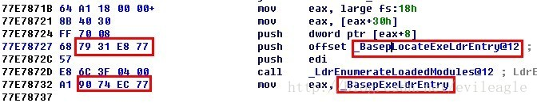
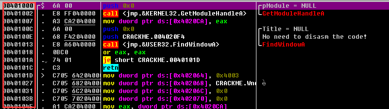
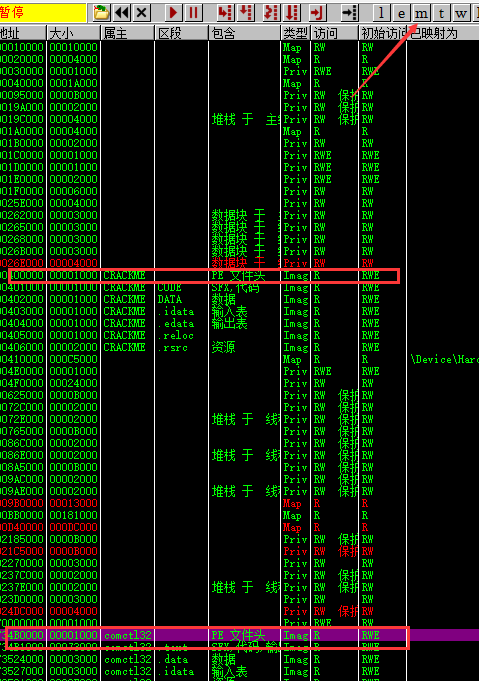
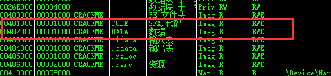
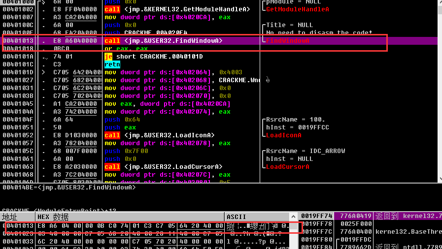
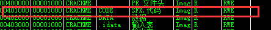

PE文件结构

PE文件结构详解（一）基本概念
1.DOS头是用来兼容MS-DOS操作系统的，目的是当这个文件在MS-DOS上运行时提示一段文字，大部分情况下是：This program cannot be run in DOS mode.还有一个目的，就是指明NT头在文件中的位置。
2.NT头包含windows PE文件的主要信息，其中包括一个‘PE’字样的签名，PE文件头（IMAGE_FILE_HEADER）和PE可选头（IMAGE_OPTIONAL_HEADER32），头部的详细结构以及其具体意义在PE文件头文章中详细描述。
3.节表：是PE文件后续节的描述，windows根据节表的描述加载每个节。
4.节：每个节实际上是一个容器，可以包含代码、数据等等，每个节可以有独立的内存权限，比如代码节默认
有读/执行权限，节的名字和数量可以自己定义，未必是上图中的三个。
当一个PE文件被加载到内存中以后，我们称之为“映象”（image），一般来说，PE文件在硬盘上和在内存里是不完全一样的，被加载到内存以后其占用的虚拟地址空间要比在硬盘上占用的空间大一些，这是因为各个节在硬盘上是连续的，而在内存中是按页对齐的，所以加载到内存以后节之间会出现一些“空洞”。
因为存在这种对齐，所以在PE结构内部，表示某个位置的地址采用了两种方式，针对在硬盘上存储文件中的地址，称为原始存储地址或物理地址表示距离文件头的偏移；另外一种是针对加载到内存以后映象中的地址，称为相对虚拟地址（RVA），表示相对内存映象头的偏移。
然而CPU的某些指令是需要使用绝对地址的，比如取全局变量的地址，传递函数的地址编译以后的汇编指令中肯定需要用到绝对地址而不是相对映象头的偏移，因此PE文件会建议操作系统将其加载到某个内存地址（这个叫基地址），编译器便根据这个地址求出代码中一些全局变量和函数的地址，并将这些地址用到对应的指令中。例如在IDA里看上去是这个样子：

这种表示方式叫做虚拟地址（VA）。
也许有人要问，既然有VA这么简单的表示方式为什么还要有前面的RVA呢？因为虽然PE文件为自己指定加载的基地址，但是windows有茫茫多的DLL，而且每个软件也有自己的DLL，如果指定的地址已经被别的DLL占了怎么办？如果PE文件无法加载到预期的地址，那么系统会帮他重新选择一个合适的基地址将他加载到此处，这时原有的VA就全部失效了，NT头保存了PE文件加载所需的信息，在不知道PE会加载到哪个基地址之前，VA是无效的，所以在PE文件头中大部分是使用RVA来表示地址的，而在代码中是用VA表示全局变量和函数地址的。那又有人要问了，既然加载基址变了以后VA都失效了，那存在于代码中的那些VA怎么办呢？答案是：重定位。系统有自己的办法修正这些值，到后续重定位表的文章中会详细描述。既然有重定位，为什么NT头不能依靠重定位采用VA表示地址呢（十万个为什么）？因为不是所有的PE都有重定位，早期的EXE就是没有重定位的。
PE文件结构详解（二）可执行文件头
一、DOS头
DOS头的作用是兼容MS-DOS操作系统中的可执行文件，对于32位PE文件来说，DOS所起的作用就是显示一行文字，提示用户：我需要在32位windows上才可以运行。我认为这是个善意的玩笑，因为他并不像显示的那样不能运行，其实已经运行了，只是在DOS上没有干用户希望看到的工作而已，我们看一下这个头是如何定义的：
我们只需要关注两个域：
e_magic：一个WORD类型，值是一个常数0x4D5A，用文本编辑器查看该值位‘MZ’，可执行文件必须都是’MZ’开头。
e_lfanew：为32位可执行文件扩展的域，用来表示DOS头之后的NT头相对文件起始地址的偏移。
二、NT头
顺着DOS头中的e_lfanew，我们很容易可以找到NT头，这个才是32位PE文件中最有用的头。
IMAGE_FILE_HEADER是PE文件头，c语言的定义是这样的：1
2
3
4
5
6
7
8
9typedef struct _IMAGE_FILE_HEADER {
WORD Machine;
WORD NumberOfSections;
DWORD TimeDateStamp;
DWORD PointerToSymbolTable;
DWORD NumberOfSymbols;
WORD SizeOfOptionalHeader;
WORD Characteristics;
} IMAGE_FILE_HEADER, *PIMAGE_FILE_HEADER;
每个域的具体含义如下：
Machine：该文件的运行平台，是x86、x64还是I64等等，可以是下面值里的某一个。
NumberOfSections：该PE文件中有多少个节，也就是节表中的项数。
TimeDateStamp：PE文件的创建时间，一般有连接器填写。
PointerToSymbolTable：COFF文件符号表在文件中的偏移。
NumberOfSymbols：符号表的数量。
SizeOfOptionalHeader：紧随其后的可选头的大小。
Characteristics：可执行文件的属性，可以是下面这些值按位相或。
可以看出，PE文件头定义了PE文件的一些基本信息和属性，这些属性会在PE加载器加载时用到，如果加载器发现PE文件头中定义的一些属性不满足当前的运行环境，将会终止加载该PE。
另一个重要的头就是PE可选头，别看他名字叫可选头，其实一点都不能少，不过，它在不同的平台下是不一样的，例如32位下是IMAGE_OPTIONAL_HEADER32，而在64位下是IMAGE_OPTIONAL_HEADER641
2
3
4
5
6
7
8
9
10
11
12
13
14
15
16
17
18
19
20
21
22
23
24
25
26
27
28
29
30
31
32
33typedef struct _IMAGE_OPTIONAL_HEADER {
WORD Magic;
BYTE MajorLinkerVersion;
BYTE MinorLinkerVersion;
DWORD SizeOfCode;
DWORD SizeOfInitializedData;
DWORD SizeOfUninitializedData;
DWORD AddressOfEntryPoint;
DWORD BaseOfCode;
DWORD BaseOfData;
DWORD ImageBase;
DWORD SectionAlignment;
DWORD FileAlignment;
WORD MajorOperatingSystemVersion;
WORD MinorOperatingSystemVersion;
WORD MajorImageVersion;
WORD MinorImageVersion;
WORD MajorSubsystemVersion;
WORD MinorSubsystemVersion;
DWORD Win32VersionValue;
DWORD SizeOfImage;
DWORD SizeOfHeaders;
DWORD CheckSum;
WORD Subsystem;
WORD DllCharacteristics;
DWORD SizeOfStackReserve;
DWORD SizeOfStackCommit;
DWORD SizeOfHeapReserve;
DWORD SizeOfHeapCommit;
DWORD LoaderFlags;
DWORD NumberOfRvaAndSizes;
IMAGE_DATA_DIRECTORY DataDirectory[IMAGE_NUMBEROF_DIRECTORY_ENTRIES];
} IMAGE_OPTIONAL_HEADER32, *PIMAGE_OPTIONAL_HEADER32;
Magic：表示可选头的类型。
MajorLinkerVersion和MinorLinkerVersion：链接器的版本号。
SizeOfCode：代码段的长度，如果有多个代码段，则是代码段长度的总和。
SizeOfInitializedData：初始化的数据长度。
SizeOfUninitializedData：未初始化的数据长度。
AddressOfEntryPoint：程序入口的RVA，对于exe这个地址可以理解为WinMain的RVA。对于DLL，这个地址可以理解为DllMain的RVA，如果是驱动程序，可以理解为DriverEntry的RVA。当然，实际上入口点并非是WinMain，DllMain和DriverEntry，在这些函数之前还有一系列初始化要完成，当然，这些不是本文的重点。
BaseOfCode：代码段起始地址的RVA。
BaseOfData：数据段起始地址的RVA。
ImageBase：映象（加载到内存中的PE文件）的基地址，这个基地址是建议，对于DLL来说，如果无法加载到这个地址，系统会自动为其选择地址。
SectionAlignment：节对齐，PE中的节被加载到内存时会按照这个域指定的值来对齐，比如这个值是0x1000，那么每个节的起始地址的低12位都为0。
FileAlignment：节在文件中按此值对齐，SectionAlignment必须大于或等于FileAlignment。
MajorOperatingSystemVersion、MinorOperatingSystemVersion：所需操作系统的版本号，随着操作系统版本越来越多，这个好像不是那么重要了。
MajorImageVersion、MinorImageVersion：映象的版本号，这个是开发者自己指定的，由连接器填写。
MajorSubsystemVersion、MinorSubsystemVersion：所需子系统版本号。
Win32VersionValue：保留，必须为0。
SizeOfImage：映象的大小，PE文件加载到内存中空间是连续的，这个值指定占用虚拟空间的大小。
SizeOfHeaders：所有文件头（包括节表）的大小，这个值是以FileAlignment对齐的。
CheckSum：映象文件的校验和。
SizeOfStackReserve：运行时为每个线程栈保留内存的大小。
SizeOfStackCommit：运行时每个线程栈初始占用内存大小。
SizeOfHeapReserve：运行时为进程堆保留内存大小。
SizeOfHeapCommit：运行时进程堆初始占用内存大小。
LoaderFlags：保留，必须为0。
NumberOfRvaAndSizes：数据目录的项数，即下面这个数组的项数。
DataDirectory：数据目录，这是一个数组.
PE文件结构详解（三）VA,RVA,FA的概念
一丶VA概念
VA (virtual Address) 虚拟地址的意思 ,比如随便打开一个PE,找下它的虚拟地址

二丶模块地址(image Base)
模块地址,就是exe加载到内存的时候,所在的地址,
比如MZ位置,在那个位置,那么对应模块地址就是这个位置
在OD中的内存中查看就是PE头

三丶RVA(relative Virtual Address) 相对虚拟地址偏移
假设我们找一个虚拟地址
VA = 0X4001200 (虚拟地址)
那么算出他的相对偏移
那么我们就要看他属于内存中那个节区了

可以看出,是在401000 ~ 41500之间,那么我们就用401000即可.
RVA = VA - 401000 得出的就是相对于虚拟地址的偏移
简化
RVA = 401200 - 401000 = 200(RVA) 那么偏移就是200了
四丶VAtoRaw(虚拟地址,转化为文件偏移位置,就是虚拟地址的代码,在文件那个偏移位置存储)
首先你要明白 RVA 怎么计算,FA怎么看.
我们随便找一个PE文件

我要找40101A虚拟地址,在文件中的位置.
思路:
1.获得虚拟地址(VA) 现在是401013
2.查看属于哪个节区表(点击内存查看,OllyDbg)

大于401000,小于402000,所以节区属于代码区,也就是code这个区域
3.算出RVA(相对虚拟地址偏移)
RVA = VA - 内存中节区地址
代入得到:
RVA = 401013 - 401000
RVA = 13 (相对虚拟地址偏移是13)
4.RVA + 文件中的(相同节表,比如上面是code,那么文件中看的节表就是code这个节表)节表中的PointerToRawData成员记录的大小 得出虚拟地址在文件中的偏移
13 + (文件中节表的偏移) = 实际虚拟地址在文件偏移记录的代码地址.
总结:
其实很简单,首先看属于哪个节表的, 那么先算出RVA的值,然后让RVA + 文件中相同节表中的成员(PointRawData) 那么最终就是虚拟地址代码,在文件偏移的位置.
举个例子
VA = 401456
RVA = 401456 - (.text的位置当然这个你得自己看,可能不是,这里默认是了)401000 = 456
FA = 456 + (文件中节表中的PointRawData,我假设是200,这里具体看PE中怎么存储的)200 = 656(十六进制)
那么这个656文件偏移处,记录的就是 虚拟地址(VA)401456的二进制代码.